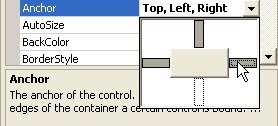

Anchor and Dock Controls on a Form
In this section of the course, we'll take a look at some of the extra things you can do with VB.NET forms. First, we'll take a look at the Anchor and Dock properties of a form.
Anchoring and Docking
The Anchor and Dock properties of a form are two separate properties. Anchor refers to the position a control has relative to the edges of the form. A textbox, for example, that is anchored to the left edge of a form will stay in the same position as the form is resized. Docking refers to how much space you want the control to take up on the form. If you dock a control to the left of the form, it will stretch itself to the height of the form, but its width will stay the same. Let's take a look at some examples, to clear things up.
Anchoring
Start a new windows projects. Add two textboxes to your form, and set the MultiLine properties of both to True. Change the height of the boxes.
Click on Textbox1 and locate the Anchor property in the Properties box:
The default is to anchor the control to the Top, Left edge of the form. Click the arrow to reveal a curious drop down box:
The button in the middle represents your control. The big white areas are rather confusing - they don't actually do anything! To change the property, you click the smaller grey or white rectangles between the big white rectangle. Click again to deselect it. In the image below, the property has been changed so that the textbox is anchored to the Top, Left and Right sides of the form:

The next image has the textbox anchored to the Right and Bottom edges of the Form:
Notice where the cursor is in the images, and what has been changed. Click the arrow on the drop down box to confirm your choices.
To see what effect this all has, do the following:
- Set the Anchor property of Textbox1 on the default of Top, Left
- Change the Anchor property of Textbox2 to None (all the small rectangles should be white.)
- Run your programme and drag the edges of the Form outward. This will resize your form
What you should notice is that Textbox1 stays where it is, and that the left edge of Textbox2 moves.
Stop your programme from running. Change the Anchor properties of the two textboxes to anything you like. Run your form again and watch what happens. Try anchoring one textbox to the left and right of the form. Watch what happens.
But anchoring a control to an edge of the form is a useful property to get used to, if you have a form that can be resized and want your controls to stay where they are.
Docking
Docking is similar to Anchoring, but this time the control fills a certain area of the form. To see how it works, click on one of your textboxes and locate the Dock property. Click the arrow to reveal a drop down box:
This time, all the rectangles are like buttons. You can only dock to one side at a time, and the default is None. Click a button to see what it does to your textbox. Click the middle one, and the textbox will Fill the whole form.
Docking is quite useful when used with the splitter control and panels, allowing you to create a Windows-style interface.
In the next part, we'll take a look at how to add a Toolbar to your Form.